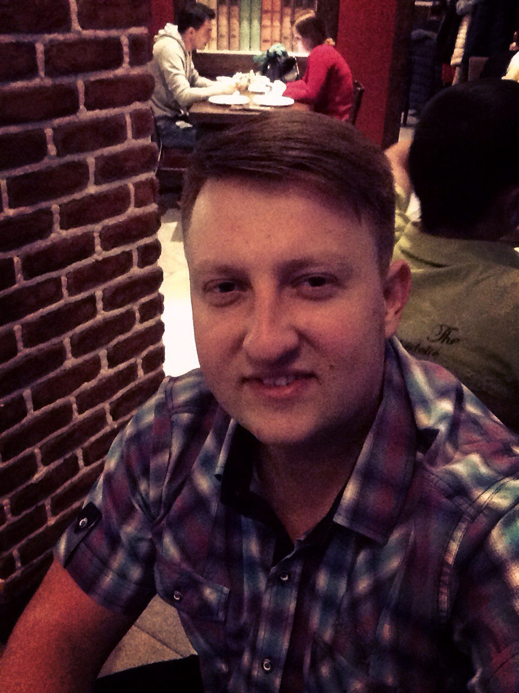

Junior RoR Developer

30 years (Ukraine, Mariupol)
Skype: sasaha111
e-mail: alex.nuzhniy@gmail.com
phone: +38(096) 744-12-17
Access Softek, USA
October 2015 – Present
Responsibilities: customizing MFM application for different Financial Institutions, submitting customized application to the AppStore.
D-Integralas, Lithuania
March 2015 – October 2015 (7 months)
Project: New Orleans Landmark app
Project description: Helps the user to visit the most popular sights in the city. Compass direction and route to particular sight's location from current user's location are provided. Project was developed completely from scratch in SWIFT.
OOP, Ruby on Rails, Ruby, HTML(basic), SQL(basic), RubyMine IDE, SWIFT, familiar with Objective-C, Xcode, Core Data, Core Location, MapKit, Cocoa Touch, Cocoa Pods, iOS, Remote Development, Git, OS X Command Line Tools, Photoshop CC (basic), Cornerstone.
Kharkiv National University of Internal Affairs (Ukraine, Kharkiv)
Bachelor's Degree, Jurisprudence
2012 – 2016
Pryazovskiy State Technical University (Ukraine, Mariupol)
Specialist Degree, Automation and Computer Integrated Technologies
2004 – 2009
Secondary School (Ukraine, Mariupol)
1994-2004, with honors
Mac Book Pro, iPhone 6s Plus, iPad
Responsible, result oriented, fast learning, honest
English (conversational, technical), Ukrainian (native), Russian (native)
Without bad habbits, do not smoke, do not take alcohol. Free time devote to sports and my daughter's education.
Remote full time job is acceptable. Relocation is less preferable and will be considered depending on particular offer's conditions. Business trips are acceptable. Would be great being able to attend conferences, seminars and regularly improve English level.